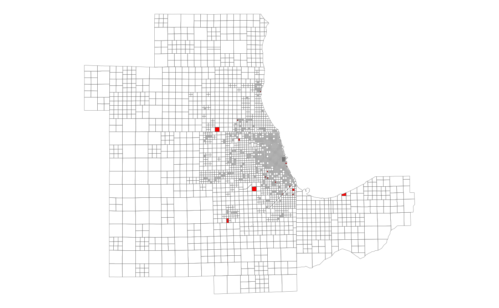

This table contains a set of factors to apportion Census block group-level
data among the CMAP travel modeling zones. Separate factors are provided for
apportioning housing unit, household, population and employment attributes.
All factors were determined by calculating the percentage of a block group's
housing units, households, population and employment that were located in
each of its component blocks, according to the 2020 Decennial Census and 2019
LEHD, and then assigning each block to a zone (based on the location of the
block's centroid point). Zones that do not contain the centroid of any blocks
with at least one housing unit, household, person or job are not present in
this table. Use xwalk_blockgroup2zone for data from the 2020 decennial
census or the American Community Survey (ACS) from 2020 onward. For data from
the 2010 decennial census or ACS from 2010 through 2019, use
xwalk_blockgroup2zone_2010.
xwalk_blockgroup2zone
xwalk_blockgroup2zone_2010xwalk_blockgroup2zone is a tibble with 13336 rows
and 6 variables:
Unique 12-digit block group ID, assigned by the Census
Bureau. Corresponds to blockgroup_sf (although that only includes the
block groups in the 7-county CMAP region). Character.
Numeric zone ID. Corresponds to zone_sf. Integer.
Proportion of the block group's housing units (occupied or vacant) located in the specified zone. Multiply this by a block group-level measure of a housing attribute (e.g. vacant homes) to estimate the zone's portion. Double.
Proportion of the block group's households (i.e. occupied housing units) living in the specified zone. Multiply this by a block group-level measure of a household attribute (e.g. car-free households) to estimate the zone's portion. Double.
Proportion of the block group's total population (including group quarters) living in the specified zone. Multiply this by a block group-level measure of a population attribute (e.g. race/ethnicity) to estimate the zone's portion. Double.
Proportion of the block group's total jobs located in the
specified zone. Multiply this by a block group-level measure of an
employment attribute (e.g. retail jobs) to estimate the zone's portion.
Not available in xwalk_blockgroup2zone_2010. Double.
xwalk_blockgroup2zone_2010 is a tibble with
12510 rows and
5 variables (no emp_pct).
Other than in certain areas of Chicago, block groups tend to be larger than zones and have highly irregular boundaries, so in most cases the jobs, population, households and/or housing units in a block group are split across multiple zones. For that reason, it is not appropriate to use a one-to-one block group-to-zone assignment to apportion Census data among zones, and this crosswalk should be used instead.
To use this crosswalk effectively, Census data should be joined to it (not
vice versa, since block group IDs appear multiple times in this table). Once
the data is joined, it should be multiplied by the appropriate factor
(depending whether the data of interest is measured at the housing unit,
household, person or job level), and then the result should be summed by zone
ID. If calculating rates, this should only be done after the counts have been
summed to zone. The resulting table can then be joined to zone_sf for
mapping, if desired.
If your data is only available at the tract level, you can use
xwalk_tract2zone for a tract-level allocation instead. If the zone
geography is too coarse for your needs, you can use subzones instead with
xwalk_blockgroup2subzone or xwalk_tract2subzone.
# View the block group allocations for zone17 == 55
dplyr::filter(xwalk_blockgroup2zone, zone17 == 55)
#> # A tibble: 4 × 6
#> geoid_blkgrp zone17 hu_pct hh_pct pop_pct emp_pct
#> <chr> <int> <dbl> <dbl> <dbl> <dbl>
#> 1 170310818001 55 0.00667 0.00726 0.0122 0.0354
#> 2 170310819001 55 0.408 0.354 0.419 1
#> 3 170318383001 55 1 1 1 1
#> 4 170318422001 55 0.422 0.463 0.473 0.330
# Map the zones missing from xwalk_blockgroup2zone (i.e. no HU/HH/pop/emp)
library(ggplot2)
ggplot(dplyr::anti_join(zone_sf, xwalk_blockgroup2zone)) +
geom_sf(fill = "red", lwd = 0.1) +
geom_sf(data = zone_sf, fill = NA, lwd = 0.1) +
theme_void()
#> Joining with `by = join_by(zone17)`
